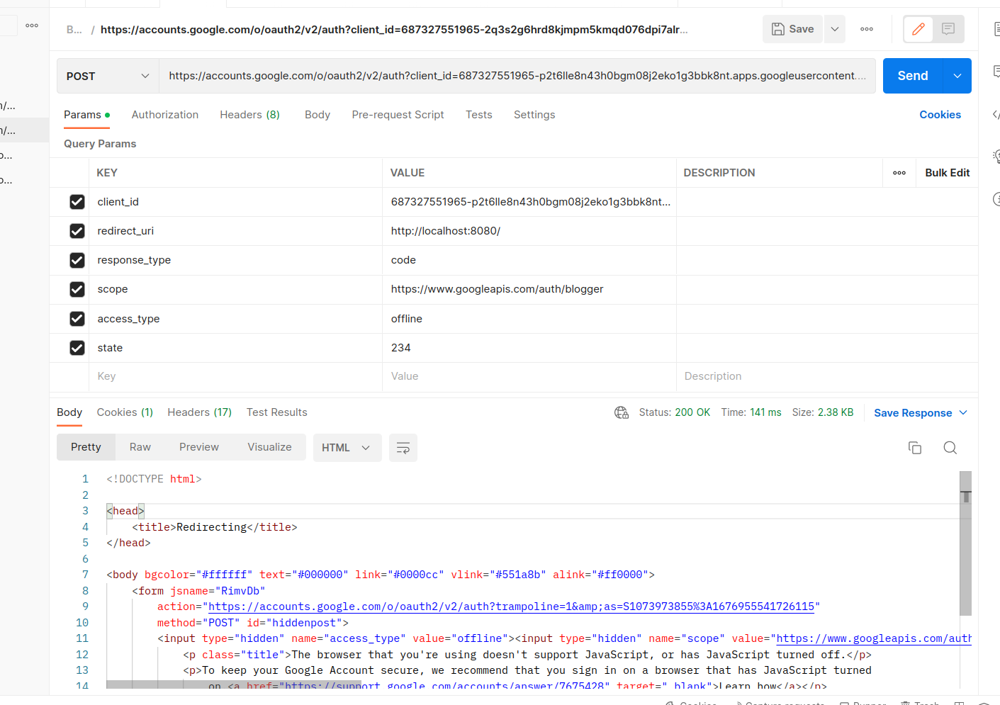
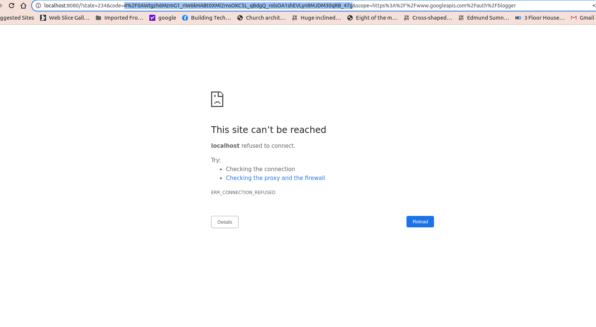
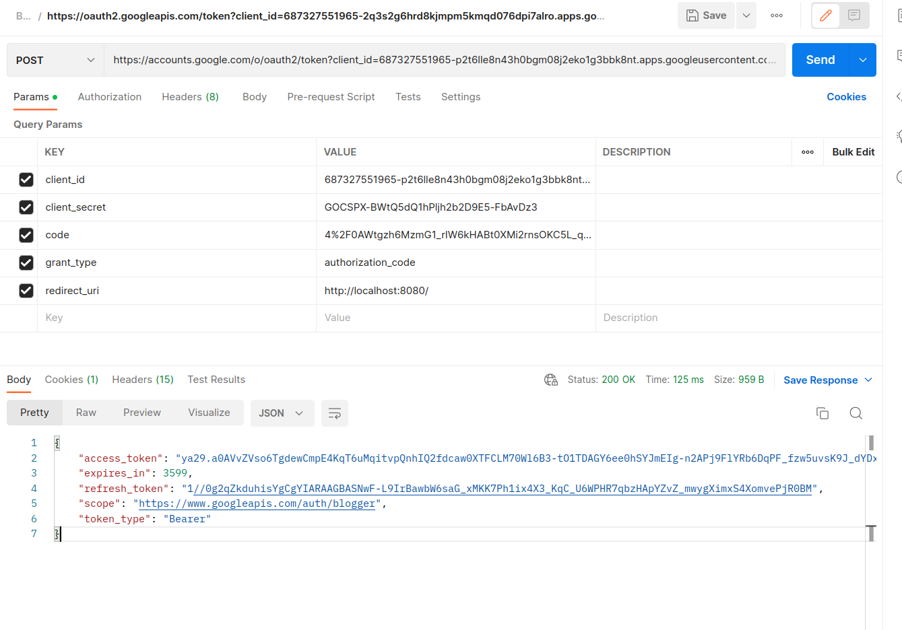
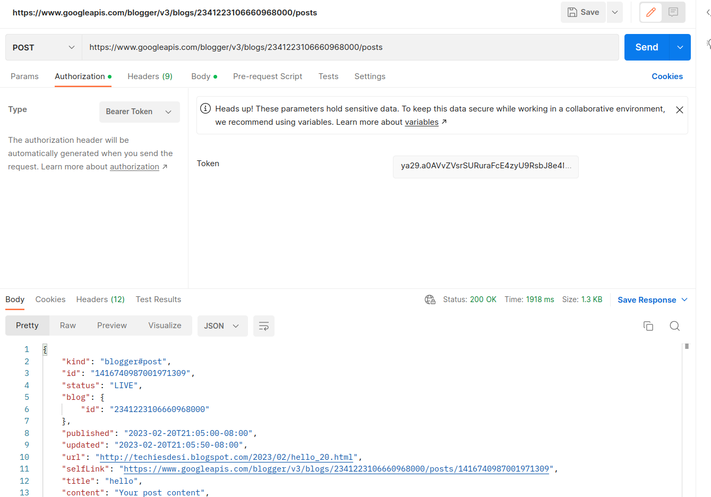
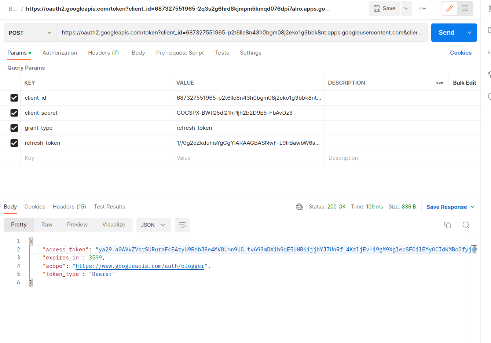

𝐇𝐨𝐰 𝐭𝐨 𝐠𝐞𝐭 𝐀𝐏𝐈 𝐚𝐜𝐜𝐞𝐬𝐬𝐭𝐨𝐤𝐞𝐧 𝐟𝐨𝐫 𝐁𝐥𝐨𝐠𝐠𝐞𝐫
- To obtain an access token for a blogger account, you will need to follow these steps:
- Go to the Google Developers Console ( https://console.developers.google.com/).
- If you have not already done so, create a new project by clicking on the "Create Project" button.
- Once your project is created, select it from the project list.
- Click on the "APIs & Services" link from the left navigation menu.
- Click on the "Enable APIs and Services" button.
- Search for the "Blogger API" and click on it to enable it.
- Click on the "Create Credentials" button and select "OAuth client ID."
- Choose "Web application" as the application type.
- Add "http://localhost:8000" to the authorized redirect URIs.
- Click on "Create" and note down the client ID and client secret generated by the system.
- Navigate to the following URL in your web browser, replacing YOUR_CLIENT_ID with the client ID obtained in step 10:
- Once you have granted access, you will be redirected to the redirect URI specified in step 9. The code parameter in the URL is the access token that you can use to authenticate with the Blogger API.
- Read about getting started with Blogger API v3.
- Read through using the Blogger API v3.
- Refer to the Reference Guide as needed.
- https://www.googleapis.com/auth/blogger - Grants read/write access to the user's blogs.
- https://www.googleapis.com/auth/blogger.readonly - Grants read-only access to the user's blogs.
- https://www.googleapis.com/auth/blogger.metadata - Grants read/write access to the metadata for the user's blogs, such as blog settings and post templates.
- https://www.googleapis.com/auth/blogger.compose - Grants write access to the user's blogs, specifically for creating and updating posts.
- https://www.googleapis.com/auth/blogger.manage.comments - Grants write access to the user's blog comments, including the ability to delete comments.
- Select "POST" as the HTTP method and enter the URL for the OAuth 2.0 authorization endpoint for the Blogger API, which is: https://accounts.google.com/o/oauth2/auth
- client_id: The client ID for your Blogger API project
- redirect_uri: The redirect URI for your Blogger API project
- response_type: The type of response you want from the authorization server (set this to "code")
- scope: The OAuth 2.0 scope for the Blogger API (set this to "https://www.googleapis.com/auth/blogger")
- state: An arbitrary string value that will be returned to your application along with the authorization code 
- This will take you to the Google sign-in page, where you'll be prompted to log in and authorize the application to access your Blogger account.
- Once you've authorized the application, you'll be redirected to the redirect URI you specified in the "redirect_uri" parameter. The redirect URI will include an authorization code as a query parameter. 
- Copy the authorization code from the redirect URI and go back to Postman. Create another request and select "POST" as the HTTP method. Enter the URL for the OAuth 2.0 token endpoint for the Blogger API, which is: https://accounts.google.com/o/oauth2/token 
- code: The authorization code you obtained in step 4
- client_id: The client ID for your Blogger API project
- client_secret: The client secret for your Blogger API project
- redirect_uri: The redirect URI for your Blogger API project
- grant_type: The grant type for the token request (set this to "authorization_code") 
https://accounts.google.com/o/oauth2/authresponse_type=code&access_type=offline&client_id=YOUR_CLIENT_ID&
redirect_uri=http%3A%2F%2Flocalhost%3A8000&scope=https%3A%2F%2Fwww.googleapis.com%2Fauth%2Fblogger
Keep in mind that access tokens have a limited lifespan and will eventually expire. You may need to periodically refresh the access token to maintain access to the Blogger API.

𝐇𝐨𝐰 𝐝𝐨 𝐈 𝐬𝐭𝐚𝐫𝐭?
If you're new to the Blogger API v3, here's how we recommend you get started:
When requesting authorization from the user, you will need to specify which scopes your application requires. The user will then be prompted to grant permission for your application to access the specified scopes.
𝐀𝐯𝐚𝐢𝐥𝐚𝐛𝐥𝐞 𝐬𝐜𝐨𝐩𝐞𝐬:
1. Open Postman and create a new request.
2.Click on the "Body" tab and select "x-www-form-urlencoded". Then enter the following parameters:
3. Click on the "Send" button to send the request.
4.Click on the "Body" tab and select "x-www-form-urlencoded". Then enter the following parameters:

5. Click on the "Send" button to send the request.
If the request is successful, you'll receive an
access
token and a
refresh token in the response. Copy the access token and use it in subsequent requests to the Blogger API by
adding it to the "Authorization" header as a bearer token.
That's it! You should now have an access token for the Blogger API that you can use in Postman.